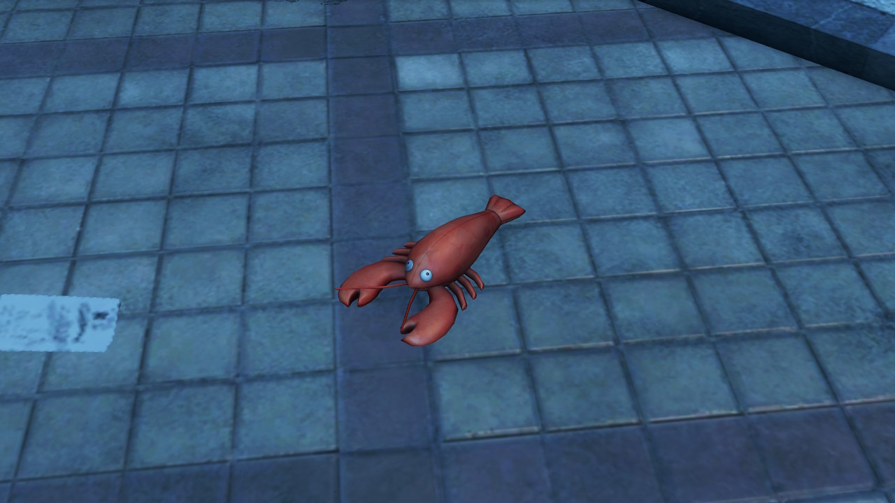

紅き死神の挑戦
紅き死神の挑戦 is NLA's city-wide scavenger hunt, hiding 99 small red ロブスターベイビー plushies on crates, rooftops, park benches, and girders solely by visual sightlines and coordinates. Tracking them down as you go spares you a long late-game search while unlocking a Level 60 boss encounter, a unique  ホロフィギュア, and NLA survey completion.
ホロフィギュア, and NLA survey completion.
To start the mission after Chapter 3 and 小さな悪, inspect the uncounted starter plushie (#0) behind the containers south of アームズ性能試験場 in the 工業エリア. Because Wave 2 (#50 to #97) only spawns after #1 through #48 and Gate #49 are collected, follow the wave checklists below in order using each spot's pause-map coordinates.

Wave 1 · #1 to #48 (Post-Chapter 3)0/48 (0%)
These first 48 plushies appear across New LA's four main districts as soon as you inspect Starter Plushie #0 after Chapter 3. Most can be picked up on foot or with a standard Skell jump, though sweeping rooftops becomes effortless once you install Flight after Chapter 9.
- #1 (-9.57, 1.57). アームズ性能試験場, walk straight inside from the main entrance and look on top of the platform near the briefing room.
- #2 (-7.84, 0.09). Southeast of the Outfitters Test Hangar (right near the #0 starter lobster): follow the unfinished southern road out to the tip of the narrow metal ledge.
- #3 (-8.96, 3.38) · Skell Jump helpful. On the roof of the 総合生産プラント, eastern side past the solar panels. Pre-Skell: ride the northern West Gate elevator up, jump left onto NLA's inner perimeter wall, walk south along the wall, and jump onto the plant roof.
- #4 (-8.77, 4.82). On the roof of the small building just southwest of the Central 工業エリア中心部 landmark.
- #5 (-7.92, 5.83). Northeast of the Central Industrial District landmark near the transport pilot: climb container-to-container to reach the top of the 3-high white Redshift container stack.
- #6 (-7.14, 5.86) · Skell Jump helpful. Southeast of Professor B's Lab / east of Central Industrial District, on top of the elevated structure with an orange crane. Pre-Skell: take the northern elevator up, jump right onto NLA's inner wall, and drop onto the crane platform.
- #7 (-9.02, 6.32). Upper level above West ウエストゲート, ride the elevator north of Central Industrial District up and climb onto the roof/wall of the elevator housing behind the upper exit.
- #8 (-7.28, 3.09). On the roof of ダイナー, sprint-jump onto the diner roof and hop onto the small sign/tower structure.
- #9 (-8.75, 6.07). Lower hallway at the elevator north of Central Industrial District / West Gate: walk to the end of the elevator corridor and hop onto the shipping container.
- #10 (-1.79, 5.26). East of East モビーストリート東, hidden in the bushes at the base of a street tree along the eastern sidewalk.
- #11 (-0.85, 5.59). Northeast end of East Melville Street, walk past the road barricades and check to the left of the closed-off gate.
- #12 (-3.02, 4.49). Southwest of East Melville Street, jump onto the roof of the L-shaped building (Italian restaurant) beside the large parking lot and look between the rooftop structures.
- #13 (-3.58, 4.56). Southeast of Central Melville Street / north of North Founders Street: in the parking lot behind BBW Salon, tucked behind one of the parked cars.
- #14 (-5.38, 4.27). Southeast of West Melville Street (west of North Founders Street): at the northernmost corner of the material yard / parking lot behind stacked steel bars.
- #15 (-5.78, 3.25). South of West Melville Street, walk out onto the narrow steel beam jutting off the southern unfinished road.
- #16 (-4.48, 5.75). South of ラテアヴェニュー, hidden in the bushes along the middle of the pedestrian street near the benches.
- #17 (-3.33, 6.31). Northeast of Barista Court (northeast corner of the Nopon Bazaar street): in the bushes right beside the tree at the edge of the road.
- #18 (-4.84, 5.88). Southwest of Barista Court, jump onto the stone fence behind the CO-OP NLA building and hop onto its roof.
- #19 (-3.96, 2.59). Lower buffer-gel water level south of North ノース第1ストリート: jump into the water, climb the red pipe pathway up to the platform, and drop off the right corner onto/past the lower red duct.
- #20 (-3.36, 1.38). Lower buffer-gel water level southeast of North Founders Street: on top of the northeasternmost unit of the 18 circular/solar-panel-like structures in the water.
- #21 (-5.16, -0.46). Lower buffer-gel water level in the far northwestern corner of the Residential District: sitting on a lower pier/platform (jump off the NW ledge from Deliverance Park or swim west from #22).
- #22 (-3.19, -1.05). Lower buffer-gel water level directly underneath the 浄水場: climb up the steep support pillar/platform in the water.
- #23 (-2.72, -0.47). At the top of the triangular roof of the 浄水場: walk straight up the sloped side from the water.
- #24 (-2.78, -2.03). West across the street from the 教会, on the roof of the southernmost of the four houses facing the Cathedral.
- #25 (-1.39, -2.74). Southeast of the Cathedral (east of the Ishmael Hills basketball court): in the bushes beside the small circular plaza.
- #26 (-2.14, -4.2). Southeast of イシュメルヒルズ along the outer perimeter road: hidden behind a row of three parked cars next to the southern ledge.
- #27 (-3.23, -3.53). Southwest of the Ishmael Hills landmark, inside the open garage/passageway of the white mansion with a swimming pool.
- #28 (-5.33, -4.33). West/southwest of the スポーツスクエア landmark: at the western end of the unfinished road.
- #29 (-4.25, -3.38). North of the Sports Complex tennis courts, in the back garden of the first house.
- #30 (-4.82, -0.58). Northwest of セイブパーク, at the end of the unfinished northwestern road.
- #31 (-5.1, -1.34) · Skell Jump helpful. At the tip of the large crane west of Deliverance Park / Sports Complex. Much easier with a Chapter 6 Skell jump, on foot, climb the red-and-white containers to the south, jump onto the crane base, hug the left side of the sloped pulley, hop onto the pulley wheel, and sprint-jump to the upper boom.
- #32 (0.62, -0.41). ブレイドコンコース, climb the staircase to the far left (southwest) behind the Mission Control board.
- #33 (1.25, 0.25). On the roof overhang directly above the ブレイドホーム entrance (take the stairs to the south to walk onto the awning).
- #34 (-0.47, 0.58). North of the ブレイドタワー entrance, facing the tower from the landmark, climb onto the small raised ledge to the left of the entrance.
- #35 (-1.3, -0.8). Southwest of BLADE Tower, drop down onto the lower wall-buttress ledge overlooking the Cathedral in the Residential District.
- #36 (1.0, 1.73). South side of ユニオンストリート, on top of the T-shaped overhead beam/bridge above the Mediators bay (climb the side stairs, cross the bridge, and jump onto the beam).
- #37 (0.24, 2.83). Northwest Division Drive behind the elevator leading down to the Hangar: walk west and balance across the right-hand narrow steel girder frame.
- #38 (0.27, 0.93). ショップ街, on the rooftop west of the Shop Terminal (jump onto the truck across the street, climb its small crane, and sprint-jump onto the roof).
- #39 (-1.41, 2.23). Lower/outer highway west of the Hangar and Division Drive: on top of the large building with two big steel ducts/pipes entering it (climb the slide-like slope from the outer freeway or drop from BLADE Tower's outer wall).
- #40 (0.45, 1.91). 隔離格納庫, climb onto the middle eastern Skell maintenance gantry where Mika and Camber stand.
- #41 (0.69, 0.86). Southeast corner of the Restricted Hangar, fast travel to Restricted Hangar Entrance, walk east to the gate, and look right on top of a shipping container.
- #42 (-0.68, 1.86). Lower Hangar level west of Restricted Hangar Entrance, walk to the military camp where Doug stands and look behind the fence just north of Doug.
- #43 (-0.2, 2.99). West of the Division Drive Hangar elevator (just past #37's steel girders): climb to the top of the red crane.
- #44 (0.34, -1.6). Southwest of the メンテナンスセンター / southeast of BLADE Tower: go down the orange stairs and jump down to the end of the red pipe/ledge on the left.
- #45 (-7.28, -5.21). 右舷 lower floor (requires Chapter 5): on top of the round green orb/pedestal next to Pfeffen in the southwest.
- #46 (-7.14, -5.5). 右舷 lower floor (requires Chapter 5): on the southernmost wall ledge just southeast of #45's green orb.
- #47 (-6.89, -4.9). 右舷 2F central area (requires Chapter 5): on top of the floating flower / cold-sleep pod structure.
- #48 (-6.67, -2.04). 甲板 (requires Chapter 5), on the outer northeastern hull tip behind the teleporter.
Midpoint Gate · #49 (Spawns After #1 to #48)0/1 (0%)
Plushie #49 stays hidden until all 48 Wave 1 plushies are in your bag. Grabbing this single midpoint plushie triggers a short update that scatters the second half of the hunt across the city and the Ma-non Ship.
- #49 · 商業エリア (-5.41, 3.71). WAVE 1 GATE (spawns ONLY after #1 to #48 are all collected): Southwest Commercial District, south of West モビーストリート西 right east of Bozé in plain sight beside the steel bars, crane, and two black Redshift trucks. Triggers a detonation cutscene that spawns Wave 2 (#50 to #97).
Wave 2 · #50 to #97 (Spawns After #49)0/48 (0%)
With #49 collected, another 48 plushies populate NLA's walkways, hangar rafters, residential yards, and the Ma-non Ship deck. Working through one district panel at a time using the pause-map coordinates keeps backtracking to a minimum.
- #51 (-7.52, 6.37). Northwest Industrial District, directly behind ドクターBの研究所 on the northwest side of the building.
- #52 (-7.82, 5.17). Southeast of Central 工業エリア中心部, inside the fenced container yard, on the ground directly underneath a yellow construction Skell.
- #53 (-7.77, 5.23). Directly above #52 (southeast of Central Industrial District): wedged in the gap between stacked containers next to the yellow construction Skell (jump up from behind).
- #54 (-8.99, 4.76). Southwest of Central Industrial District behind Roscoe, tucked in the narrow gap between crates beside the parked VTOL/helicopter transport.
- #55 (-8.79, 6.13). North of Central Industrial District / West Gate, on the ground directly underneath the northern elevator platform beside a construction Skell.
- #56 (-8.96, 6.38). Upper level above West Gate, ride the elevator north of West Gate up and walk along the upper indoor corridor leading outside, sitting on the left side of the hallway.
- #57 (-7.43, 2.61). South across the street from ダイナー, in the material storage yard, tucked between stacks of wooden crates.
- #58 (-9.1, 2.58). West/southwest of the 総合生産プラント: on top of the small cylindrical waste-treatment tank (reachable on foot by jumping from the black truck onto the ledge and across).
- #59 (-10.2, -0.53). Far southwest Industrial District, outside on the outer southwestern perimeter ledge behind the アームズ性能試験場.
- #60 (-8.92, 1.5). Inside the Outfitters Test Hangar, on the elevated work platform on the left (east side near the smaller door) behind a kneeling Skell where a mechanic works on a green Skell.
- #50 (-5.3, 3.76). Spawns immediately after #49's cutscene right next to #49 Sits on the ground between the two black Redshift trucks south of West Melville Street near Bozé (note: if you touched #49 in a Skell, your Skell often picks #50 up automatically right as the cutscene ends).
- #61 (-5.16, 2.78). Southwest of North ノース第1ストリート, on the western side of the main southern avenue leading toward the Industrial District.
- #62 (-4.81, 2.61). Southwest of North Founders Street (just west/down from #61): partway down the red emergency staircase descending toward the lower water level.
- #63 (-5.06, 5.22). East of West モビーストリート西, sitting on a bench next to Cheche along the central street.
- #64 (-5.1, 5.55). Northeast of West Melville Street behind Army Pizza, sitting in an empty parking space in the parking lot from 'A Hero's Ride'.
- #65 (-1.31, 5.15). Eastern end of East モビーストリート東 near the sealed northeast gate: wedged between two parked yellow trucks/trailers.
- #66 (-2.64, 6.21). North of East Melville Street at the unfinished northern road: on a narrow ledge along the western side of the road pier.
- #67 (-2.63, 3.57). South of East Melville Street / east of North Founders Street at the unfinished southern road: on a lower steel beam along the western side (walk out on the upper steel beam and drop while hugging the beam to collect it).
- #68 (-2.13, 5.6) · ドールフライトパック. Northeast of East Melville Street, on the rooftop edge of the tall skyscraper. Requires Skell ドールフライトパック (post-Ch. 9) in normal play (technically reachable pre-flight only via an extreme outer-ring wall parkour route from BLADE Barracks).
- #69 (-5.1, 1.38). Lower buffer-gel water level southwest of North Founders Street (continue down #62's red stairs and walk along the red pipes): on top of the western circular/solar-panel-like structure in the water.
- #70 (-3.59, 4.86). Southeast of the Central モビーストリート中央 intersection: tucked in the narrow alley between the ISYQUA and relojero buildings.
- #71 (-2.3, -2.83). East of イシュメルヒルズ, right on the outdoor basketball court.
- #72 (-3.99, -3.11) · Skell Jump helpful. Two houses north of the スポーツスクエア tennis courts (west of Ishmael Hills): on the 2nd-floor balcony/veranda of the white house (Skell jump or flight helpful).
- #73 (-4.94, -4.05). West of the Sports Complex tennis courts in the material yard near two yellow construction Skells: tucked between three large shipping containers.
- #74 (-1.84, -1.42) · ドールフライトパック. Inside the high belfry (bell tower) of the 教会: requires Skell Flight Module (or a precise high Skell jump onto the Cathedral roof/belfry).
- #75 (-2.95, -1.62). Southwest of the 浄水場 / west of the Cathedral: in the backyard garden of a house.
- #76 (-4.63, 0.09). Northwest of セイブパーク, descend the emergency stairs toward the lower water-level platform and check beside the bottom of the staircase.
- #77 (-4.27, 0.03). Northwest of Deliverance Park (just up the stairs from #76): tucked under/on the middle landing of the emergency staircase leading down to the lower level.
- #78 (0.48, 3.18). 隔離格納庫, along the northern wall on an elevated walkway near some crates.
- #79 (1.15, 2.98) · ドールフライトパック. ユニオンストリート, high on the rooftop above the アヴァランチ division area. Requires Skell Flight Module (post-Ch. 9).
- #80 (0.73, 1.12) · ドールフライトパック. ショップ街, on the lower roof overhang of the Arms Manufacturers building directly above タウラー. Requires Skell Flight Module (post-Ch. 9).
- #81 (0.66, 1.15) · ドールフライトパック. ショップ街, on the upper roof of the Arms Manufacturers building directly above #80. Requires Skell Flight Module (post-Ch. 9).
- #82 (-0.11, 1.81). Northwest Armory Alley, go down the northern passage between the Shop Terminal and L's shop, then check behind a stack of three small crates.
- #83 (3.68, 1.1). Outer East イーストゲート right on the border leading out to Primordia, near Thomas.
- #84 (1.24, -0.64). ブレイドコンコース, on the 2nd-floor balcony of the コレペディアリアン bay directly above where Murderess hangs out.
- #85 (-0.02, -0.8) · ドールフライトパック. On top of the elevated skybridge connecting ブレイドタワー to the building south of it. Requires Skell Flight Module (post-Ch. 9).
- #86 (0.0, -0.41) · ドールフライトパック. On the very top roof of ブレイドタワー. Requires Skell Flight Module (post-Ch. 9).
- #87 (0.49, 1.73) · ドールフライトパック. On the roof of the tall skyscraper north of BLADE Tower. Requires Skell Flight Module (post-Ch. 9).
- #88 (-1.94, -0.11). Plaza west/in front of BLADE Tower, underneath the parked green transport helicopter/VTOL.
- #89 (-0.48, -1.34). South of BLADE Tower near the top of the elevator leading down to the Residential District: on a small ledge beside the red lamp just northeast of the wire fence.
- #90 (-0.59, -1.38). Bottom of the southern BLADE Tower elevator (bordering the Residential District): ride the elevator down and go down the adjacent steps right beside the lower exit.
- #91 (-0.08, -1.52). Southwest of the メンテナンスセンター: in the narrow back alley between the blue fence and the ECP building.
- #92 (0.75, 1.5). Lowest buffer-gel level beneath the Hangar at ヤードリーの隠れ家: run up the slanted beam structure right at the fast-travel spawn point.
- #93 (-6.84, -5.26). 右舷 upper 2F southern end, on top of a floating black structure across from the fast-travel point (stand atop the nearby green crystal/pod and do a sprint-jump: L-stick click + Jump).
- #94 (-8.6, -1.8). 左舷 upper northeast section, on top of a floating black structure (sprint-jump across from the adjacent upper ledge).
- #95 (-9.15, -2.48). 左舷 lower 1F, go down the long eastern ramp and check behind the stack of containers at the bottom.
- #96 (-9.65, -2.8). 左舷 lower southwest floor, down in the sunken step-down area underneath the green orb.
- #97 (-7.98, -3.24). 甲板 upper roof overlooking the teleporter: right next to the ヘラドッツ.
Endgame Gate · #98 (Requires #1 to #97 & Definian Downfall)0/1 (0%)
The 98th plushie requires both collecting #1 through #97 and clearing the late-game side quest Definian Downfall, which opens the final story beat of the investigation.
- #98 · ブレイドエリア (0.77, 1.69). デフィニア殲滅 is completed: Upper ユニオンストリート, behind a stack of crates on the west side of the コンパニオン division bay.
Finale · #99 & Boss0/1 (0%)
Claiming the 99th plushie from Justin in the Commercial District sends you to Ganglion Antropolis in Cauldros for a Level 60 showdown, wrapping up the quest and awarding The Blood Lobster Holofigure.
- #99 · 商業エリア . FINAL STUFFED LOBSTER (#99), After collecting #98, follow the quest marker to East モビーストリート東 in the Commercial District and speak to ジャスティン by the fountain to receive the 99th Stuffed Lobster automatically in a cutscene. Then travel to グロウス洞窟基地 (near FN505 in Cauldros) and defeat Lv. ブラッドディスペアー to finish the mission